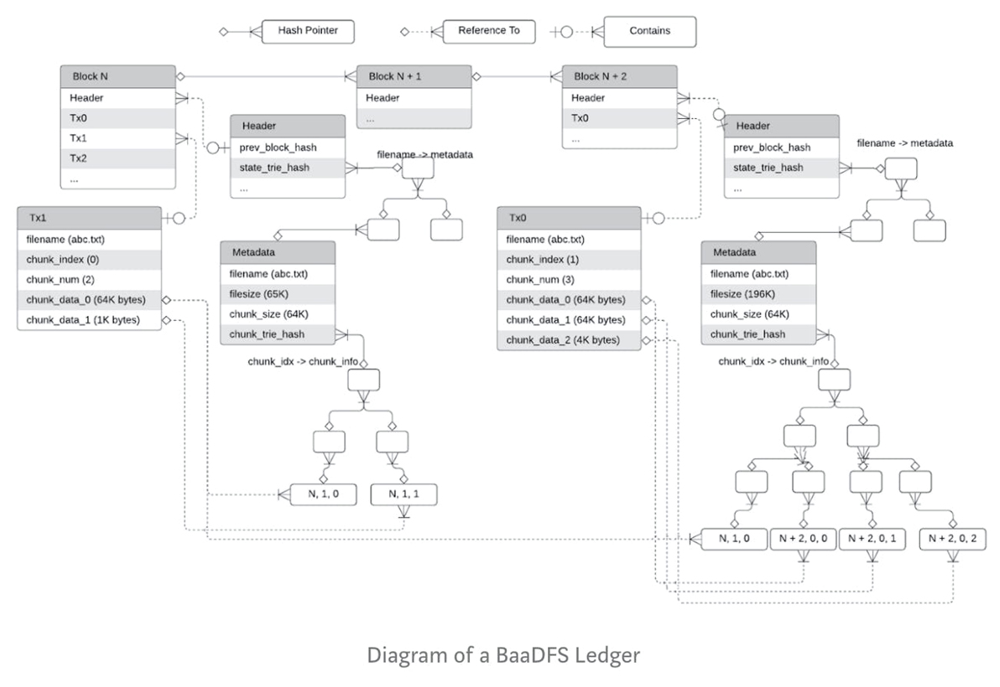

Our mission at StorX Network is to educate and deploy the power of Bitcoin Advantages of using Bitcoin powered blockchain as a distributed file system (BaaDFS) include:
In Distributed File System a user can tolerate failures of ⅓ full nodes and enjoy almost 100% high availability on read unless all nodes are down without worry about the single-point of failure of metadata servers.
A node could fully validate the integrity of any piece of the data written to the DFS. The validation can be very efficient: given the position of the data (filename, offset, len), the cost of validating the data has the same order of the cost of a client read operation.
A writer can check the integrity of the written data and ensure immunity, and any reader could verify such integrity and immunity. Currently, the blockchain network is designed for private use (as the target DFS is centralized), but it should be able to extend to public/consortium use with some modifications.
BaaDFS is represented as a list of data chunks.
In the proposed BaaDFS, a chunk of data is stored as part of a blockchain block, where the block consists of
a header
a list of write transactions, where each transaction is tx := (filename, chunk_idx, chunk_num, chunk_data_0, chunk_data_1, chunk_data_${chunk_num — 1}),
which means that the data chunk_data_0, chunk_data_1, …, chunk_data_${chunk_num — 1} are written to the file with the offset starting from chunk_idx * chunk_size. The size of chunk_data's in a transaction must be chunk_size, except the last one, whose size, last_chunk_size <= chunk_size. The resulting new file_size after applying the write transaction becomes (chunk_idx + chunk_num — 1) * chunk_size + last_chunk_size. The hash of the list of transactions (likely in a Merkle tree way) will be stored in a field of the block header as conventional blockchain does.
Note that since we implement an append-only file system, the write transactions must satisfy the following constraints (assuming file_size' is the pre-write file size, and file_size is the post-write file size)
(Chunks unchanged except the last one) chunk_idx > file_size' // chunk_size (// is the integer division operator) (Last chunk write must be append) if chunk_idx == file_size' // chunk_size + 1, then chunk_data_0 must contain last_chunk_data', where last_chunk_data' is the last chunk of the file before the write transaction.
To lookup the chunk, we define a chunk_info, which tells where the chunk data can be read as
chunk_info := (block_index, tx_index, tx_chunk_index)
where block_index is the height of the block that contains the corresponding write operation/transaction, tx_index is the position of the write transaction in the block, and tx_chunk_index is the position of the chunk_data in the transaction.
As a result, given the history of the ledger, i.e., blocks, a reader could fully read any part of the file by a list of chunk_info's together with file_size and chunk_size, where the list of chunk_info can be efficiently implemented as a Merkle tree (likely an accumulator) for fast update (only the last item), append, and read.
The tuple of (file_size, chunk_size, and chunk_info_trie_hash) is defined as the metadata of the file as:
metadata := (file_size, chunk_size, chunk_info_trie_hash),
and the state of the ledger given a block is basically a mapping as:
state := filename -> metadata
which could be implemented as another Merkle tree (e.g., Patricia Merkle Tree or Sparse Merkle Tree), whose hash value will be stored in the header of the block.
Summarizing the aforementioned details, the diagram of the ledger of a BaaDFS looks like:
